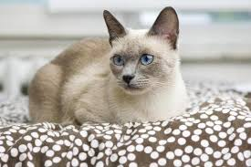
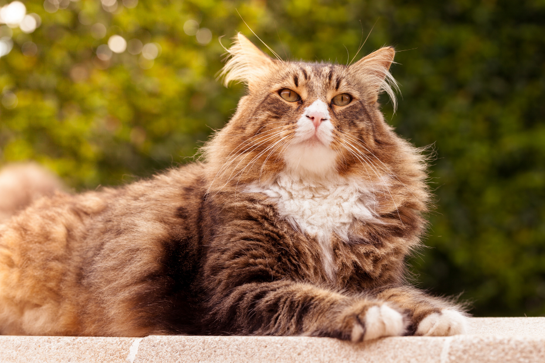
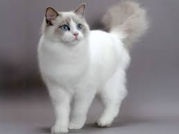
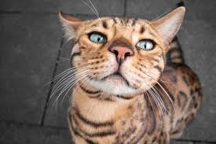
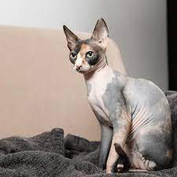
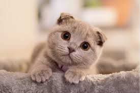

Nossos Gatos
Luna - Siamês

Idade: 2 anos
Personalidade: Conversadora
Traços: Muito vocal e carinhosa
Salen - Maine Coon

Idade: 4 anos
Personalidade: Majestoso
Traços: Pelagem longa e imponente
Mimi - Persa

Idade: 3 anos
Personalidade: Tranquila
Traços: Rosto achatado, precisa de cuidados especiais
Oliver - Vira-lata

Idade: 1 ano
Personalidade: Brincalhão
Traços: Muito energético e curioso
Bella - Angorá

Idade: 5 anos
Personalidade: Elegante
Traços: Pelagem sedosa e olhos claros
Simba - Bengal

Idade: 2 anos
Personalidade: Ativo
Traços: Padrão de pelagem exótico, adora escalar
Nina - Ragdoll

Idade: 3 anos
Personalidade: Relaxada
Traços: Fica mole quando pegada no colo
Loki - Sphynx

Idade: 4 anos
Personalidade: Apegado
Traços: Sem pelos, precisa de proteção térmica
Mia - Scottish Fold

Idade: 2 anos
Personalidade: Doce
Traços: Orelhas dobradas, aparência única